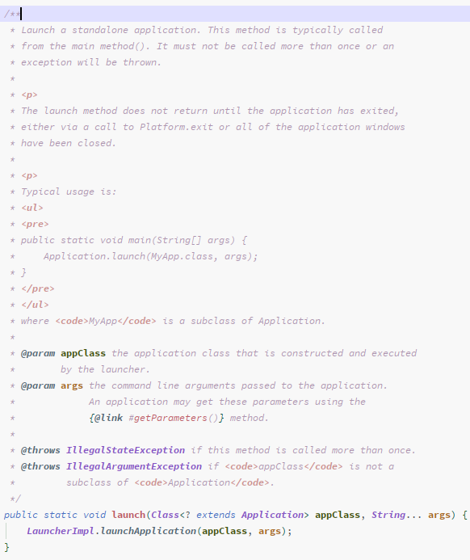
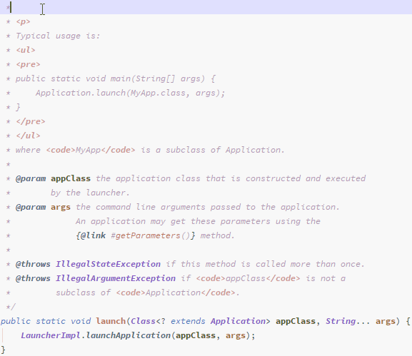
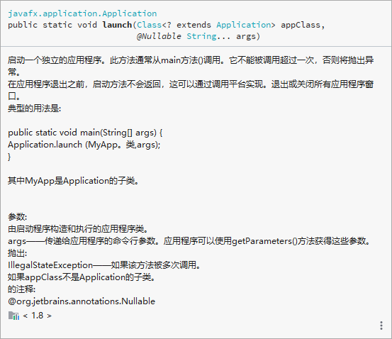
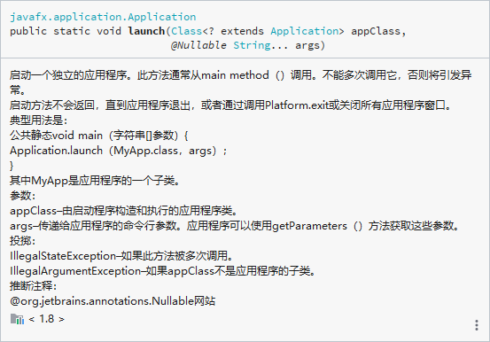
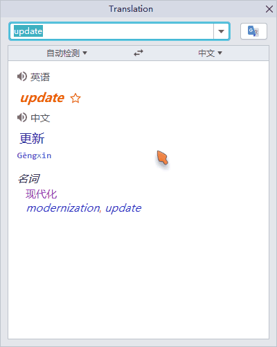
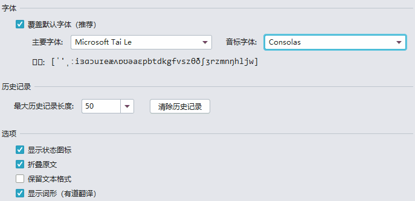

欢迎使用Translation v2.6，此版本中包含了以下主要更新：
- 文档注释翻译 - 支持一键翻译文档注释
- 有道翻译支持语言 - 支持超多新语言
- 字体预览 - 展示真实的文本渲染情况
如果您想在线阅读此发行说明，请访问这里。
翻译
文档注释翻译
现在，您可以对代码中的文档注释进行一键翻译，不再需要手动选择文本后再进行翻译了，也无需再担心文档注释中的一些元素（如文档特殊标记符号、HTML元素等）的干扰。
注：使用此功能时，建议使用谷歌翻译并将IDE升级至最新版，以获得最佳的翻译效果。
待翻译文档：
Google翻译效果：
有道翻译效果：
百度翻译效果：
有道翻译支持语言
我们更新了有道翻译的支持语言列表，新的支持语言列表包含了超过100种语言：
选项
字体预览
我们优化发选项面板中的字体预览，以展示真实的文本渲染情况。在此之前，由于受到IDE主字体的影响，预览文本在选定的字体下本应该不能正确渲染，却得到了渲染，从而导致预览与插件UI上所展示的不一致。
重要修复
- #402：使用百度翻译引擎翻译带有换行内容时显示的翻译内容不全，仅显示第一行的翻译内容。